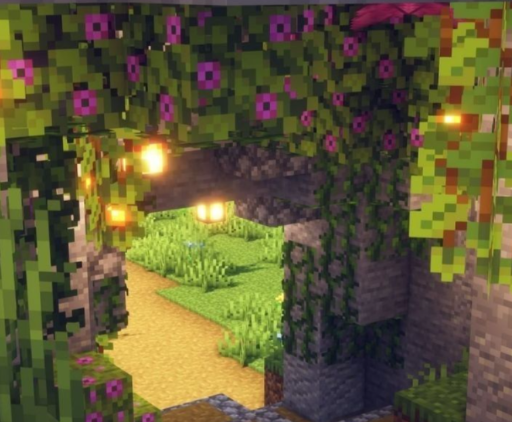

Minecraft's Caves & Cliffs Update, released in June 2021 as version 1.17, added significant new content to the
game's underground and mountain environments. This update introduced new blocks like copper,
amethyst, and
deep
slate, which provided players with a variety of new materials for crafting and building. Copper blocks brought an
aging mechanic, changing their colour over time and offering builders a unique visual element for their creations.
Additionally, new mobs such as axolotls, glow squids, and goats were introduced, adding more diversity and life to
the game.
Click and Drag to see more....

.avif)
jpg)
The 1.17 update also brought new items and mechanics that enhanced gameplay. Players could now find amethyst
geodes, which contained crystals used for crafting new items like the spyglass and tinted glass. Deep slate added
a new dimension to mining, being harder to mine but offering new building opportunities with its distinct
appearance. The update also included the introduction of the lightning rod, which could protect structures from
lightning strikes, and the addition of powdered snow, which affected player movement and added a new environmental
hazard. These new features enriched the game's mechanics and provided players with more tools for creativity and
survival.
Beyond the new blocks and mobs, the 1.17 update made significant improvements to the overall exploration
experience. The addition of lush caves and dripstone caves as new biomes brought more variety and visual appeal to
the underground world. These biomes featured unique vegetation and terrain. The update also improved the
generation of ores, ensuring for a more balanced and engaging mining experience.